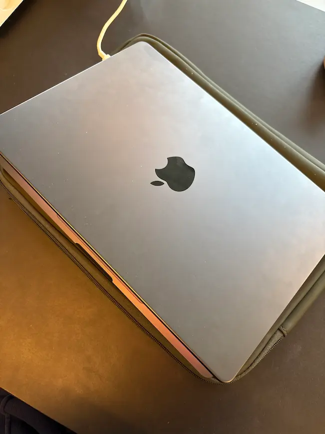

Min computer

Type
Jeg har en macbook pro 2024 m4 i farven space balck. Det er en af de nyeste macbooks
Specifikationer
Med den indbyggede m4 chip så kan computeren holde til rigtig meget. Den har nogle gode blæsere så computeren ikke bliver for varm. Ellers har den også et touchknap så man kan låse den op med fingeraftryk.